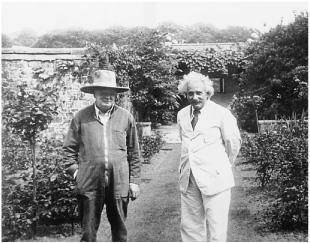

CHAPTER EIGHTEEN
THE REFUGEE
1932–1933

With Winston Churchill at his home, Chartwell, 1933
“Bird of Passage”
“Today I resolved to give up my Berlin position and shall be a bird of passage for the rest of my life,” Einstein wrote in his travel diary. “I am learning English, but it doesn’t want to stay in my old brain.”1
It was December 1931, and he was sailing across the Atlantic for a third visit to America. He was in a reflective mood, aware that the course of science might be proceeding without him and that events in his native land might again make him rootless. When a ferocious storm, far greater than any he had ever witnessed, seized his ship, he recorded his thoughts in his travel diary. “One feels the insignificance of the individual,” he wrote, “and it makes one happy.”2
Yet Einstein was still torn about whether to forsake Berlin for good. It had been his home for seventeen years, Elsa’s for even longer. Despite the challenge from Copenhagen, it was still the greatest center for theoretical physics in the world. For all of its dark political undercurrents, it remained a place where he was generally loved and revered, whether he was holding court in Caputh or taking his seat at the Prussian Academy.
In the meantime, his options continued to grow. This trip to America was for another two-month visiting professorship at Caltech, which Millikan was trying to turn into a permanent arrangement. Einstein’s friends in Holland had for years also been trying to recruit him, and now so too was Oxford.
Soon after he settled into his rooms at the Athenaeum, the graceful faculty club at Caltech, yet another possibility arose. One morning, he was visited there by the noted American educator Abraham Flexner, who spent more than an hour walking the cloistered courtyard with him. When Elsa found them and summoned her husband to a luncheon engagement, he waved her off.
Flexner, who had helped reshape American higher education as an officer of the Rockefeller Foundation, was in the process of creating a “haven” where scholars could work without any academic pressures or teaching duties and, as he put it, “without being carried off in the maelstrom of the immediate.”3 Funded by a $5 million donation from Louis Bamberger and his sister Caroline Bamberger Fuld, who had the good fortune to sell their department store chain just weeks before the 1929 stock market crash, it would be named the Institute for Advanced Study and located in New Jersey, probably next to (but not formally affiliated with) Princeton University, where Einstein had already spent some enjoyable time.
Flexner had come to Caltech to get some ideas from Millikan, who (to his later regret) insisted he talk to Einstein. When Flexner finally set up such a meeting, he was impressed, he later wrote, with Einstein’s “noble bearing, simply charming manner, and his genuine humility.”
It was obvious that Einstein would be a perfect anchor and ornament for Flexner’s new institute, but it would have been inappropriate for Flexner to make an offer on Millikan’s home turf. Instead, they agreed that Flexner would visit Einstein in Europe to discuss matters further. Flexner claimed in his autobiography that, even after their Caltech meeting, “I had no idea that he [Einstein] would be interested in being connected to the Institute.” But that was belied by the letters he wrote to his patrons at the time, in which he referred to Einstein as an “unhatched chicken” whose prospects they needed to treat circumspectly.4
By then Einstein had grown slightly disenchanted with life in southern California. When he gave a speech to an international relations group, in which he denounced arms-control compromises and advocated complete disarmament, his audience seemed to treat him as celebrity entertainment. “The propertied classes here seize upon anything that might provide ammunition in the struggle against boredom,” he noted in his diary. Elsa reflected his annoyance in a letter to a friend. “The affair was not only lacking in seriousness but was treated as a kind of social entertainment.”5
As a result, he was dismissive when his friend Ehrenfest in Leiden wrote to ask for his help in getting a job in America. “I must tell you honestly that in the long term I would prefer to be in Holland rather than in America,” Einstein replied. “Apart from the handful of really fine scholars, it is a boring and barren society that would soon make you shiver.”6
Nevertheless, on this and other topics Einstein’s mind was not a simple one. He clearly enjoyed America’s freedom, excitement, and even (yes) the celebrity status it conferred upon him. Like many others, he could be critical of America yet also attracted to it. He could recoil at its occasional displays of crassness and materialism, yet find himself powerfully drawn to the freedoms and unvarnished individuality that were on the flip side of the same coin.
Soon after returning to Berlin, where the political situation had become even more unnerving, Einstein went to Oxford to give another series of lectures. Once again, he found its refined formality oppressive, especially in contrast to America. At the stultifying sessions of the governing body of Christ Church, his college at Oxford, he sat in the senior common room holding a notepad under the tablecloth so that he could scribble equations. He came to realize, once again, that America, for all of its lapses of taste and excesses of enthusiasm, offered freedoms he might never find again in Europe.7
Thus he was pleased when Flexner came, as promised, to continue the conversation they had started at the Athenaeum. Both men knew, from the outset, that it was not merely an abstract discussion but part of an effort to recruit Einstein. So Flexner was a bit disingenuous when he later wrote that it was only while they were pacing around the manicured lawns of Christ Church’s Tom Quad that it “dawned on me” that Einstein might be interested in coming to the new institute. “If on reflection you conclude that it would give you the opportunities that you value,” Flexner said, “you would be welcome on your own terms.”8
The arrangement that would bring Einstein to Princeton was concluded the following month, June 1932, when Flexner visited Caputh. It was cool that day, and Flexner wore an overcoat, but Einstein was in summer clothes. He preferred, he joked, to dress “according to the season not according to the weather.” They sat on the veranda of Einstein’s beloved new cottage and spoke all afternoon and then through dinner, up until Einstein walked Flexner to the Berlin bus at 11 p.m.
Flexner asked Einstein how much he would expect to make. About $3,000, Einstein tentatively suggested. Flexner looked surprised. “Oh,” Einstein hastened to add, “could I live on less?”
Flexner was amused. He had more, not less, in mind. “Let Mrs. Einstein and me arrange it,” he said. They ended up settling on $10,000 per year. That was soon increased when Louis Bamberger, the primary backer, discovered that mathematician Oswald Veblen, the Institute’s other jewel, was making $15,000 a year. Bamberger insisted that Einstein’s salary be equal.
There was one additional deal point. Einstein insisted that his assistant, Walther Mayer, be given a job of his own as well. The previous year he had let authorities in Berlin know that he was entertaining offers in America that would provide for Mayer, something Berlin had been unwilling to do. Caltech had balked at this request, as did Flexner initially. But then Flexner relented.9
Einstein did not consider his post at the Institute a full-time job, but it was likely to be his primary one. Elsa delicately broached this in her letter to Millikan. “Will you, under the circumstances, still want my husband in Pasadena next winter?” she asked. “I doubt it.”10
Actually, Millikan did want him, and they agreed that Einstein would come back again in January, before the Institute would be open in Princeton. Millikan was upset, however, that he had not finalized a long-term deal, and he realized that Einstein would end up being, at best, an occasional visitor to Caltech. As it turned out, the upcoming January 1933 trip that Elsa helped arrange would end up being his last trip to California.
Millikan vented his anger at Flexner. Einstein’s connection with Caltech “has been laboriously built up during the past ten years,” he wrote. As a result of Flexner’s pernicious raid, Einstein would be spending his time at some new haven rather than a great center of experimental as well as theoretical physics. “Whether the progress of science in the U.S. will be advanced by such a move, or whether Professor Einstein’s productivity will be increased by such a transfer, is at least debatable.” He proposed, as a compromise, that Einstein split his time in America between the Institute and Caltech.
Flexner was not magnanimous in victory. He protested, falsely, that it was “altogether by accident” that he ended up in Oxford and speaking to Einstein, a tale that even his own memoirs later contradicted. As for sharing Einstein, Flexner declined. He claimed that he was looking after Einstein’s interests. “I cannot believe that annual residence for brief periods at several places is sound or wholesome,” he wrote. “Looking at the entire matter from Professor Einstein’s point of view, I believe that you and all of his friends will rejoice that it has been possible to create for him a permanent post.”11
For his part, Einstein was unsure how he would divide his time. He thought that he might be able to juggle visiting professorships in Princeton, Pasadena, and Oxford. In fact, he even hoped that he could keep his position in the Prussian Academy and his beloved cottage in Caputh, if things did not worsen in Germany. “I am not abandoning Germany,” he announced when the Princeton post became public in August. “My permanent home will still be in Berlin.”
Flexner spun the relationship the other way, telling the New York Times that Princeton would be Einstein’s primary home. “Einstein will devote his time to the Institute,” Flexner said, “and his trips abroad will be vacation periods for rest and meditation at his summer home outside of Berlin.”12
As it turned out, the issue would be settled by events out of either man’s control. Throughout the summer of 1932, the political situation in Germany darkened. As the Nazis continued to lose national elections but increase their share of the vote, the octogenarian president, Paul von Hindenburg, selected as chancellor the bumbling Franz von Papen, who tried to rule through martial authority. When Philipp Frank came to visit him in Caputh that summer, Einstein lamented, “I am convinced that a military regime will not prevent the imminent National Socialist [Nazi] revolution.”13
As Einstein was preparing to leave for his third visit to Caltech in December 1932, he had to suffer one more indignity. The headlines about his future post in Princeton had aroused the indignation of the Woman Patriot Corporation, a once powerful but fading group of American self-styled guardians against socialists, pacifists, communists, feminists, and undesirable aliens. Although Einstein fit into only the first two of these categories, the women patriots felt sure that he fit into them all, with the possible exception of feminists.
The leader of the group, Mrs. Randolph Frothingham (who, given this context, seemed as if her distinguished family name had been conjured up by Dickens), submitted a sixteen-page typed memo to the U.S. State Department detailing reasons to “refuse and withhold such passport visa to Professor Einstein.” He was a militant pacifist and communist who advocated doctrines that “would allow anarchy to stalk in unmolested,” the memo charged. “Not even Stalin himself is affiliated with so many anarcho-communist international groups to promote this ‘preliminary condition’ of world revolution and ultimate anarchy as albert einstein.” (Emphasis and capitalization are in the original.)14
State Department officials could have ignored the memo. Instead, they put it into a file that would grow over the next twenty-three years into an FBI dossier of 1,427 pages of documents. In addition, they sent the memo to the U.S. consulate in Berlin so that officers there could interview Einstein and see if the charges were true before granting him another visa.
Initially, Einstein was quite amused when he read newspaper accounts of the women’s allegations. He called up the Berlin bureau chief of United Press, Louis Lochner, who had become a friend, and gave him a statement that not only ridiculed the charges but also proved conclusively that he could not be accused of feminism:
Never yet have I experienced from the fair sex such energetic rejection of all advances, or if I have, never from so many at once. But are they not right, these watchful citizenesses? Why should one open one’s doors to a person who devours hard-boiled capitalists with as much appetite and gusto as the ogre Minotaur in Crete once devoured luscious Greek maidens—a person who is also so vulgar as to oppose every sort of war, except the inevitable one with his own wife? Therefore, give heed to your clever and patriotic women folk and remember that the capital of mighty Rome was once saved by the cackling of its faithful geese.15
The New York Times ran the story on its front page with the headline, “Einstein Ridicules Women’s Fight on Him Here / Remarks Cackling Geese Once Saved Rome.”16 But Einstein was far less amused two days later when, as he and Elsa were packing to leave, he received a telephone call from the U.S. consular office in Berlin asking him to come by for an interview that afternoon.
The consul general was on vacation, so his hapless deputy conducted the interview, which Elsa promptly recounted to reporters.17 According to the New York Times, which ran three stories the next day on the incident, the session started well enough but then degenerated.
“What is your political creed?” he was asked. Einstein gave a blank stare and then burst out laughing. “Well, I don’t know,” he replied. “I can’t answer that question.”
“Are you a member of any organization?” Einstein ran his hand through “his ample hair” and turned to Elsa. “Oh yes!” he exclaimed. “I am a War Resister.”
The interview dragged on for forty-five minutes, and Einstein became increasingly impatient. When he was asked whether he was a sympathizer of any communist or anarchist parties, Einstein lost his temper. “Your countrymen invited me,” he said. “Yes, begged me. If I am to enter your country as a suspect, I don’t want to go at all. If you don’t want to give me a visa, please say so.”
Then he reached for his coat and hat. “Are you doing this to please yourselves,” he asked, “or are you acting on orders from above?” Without waiting for an answer, he left with Elsa in tow.
Elsa let the papers know that Einstein had quit packing and had left Berlin for his cottage in Caputh. If he did not have a visa by noon the next day, he would cancel his trip to America. By late that night, the consulate issued a statement saying that it had reviewed the case and would issue a visa immediately.
As the Times correctly reported, “He is not a Communist and has declined invitations to lecture in Russia because he did not want to give the impression that he was in sympathy with the Moscow regime.” What none of the papers reported, however, was that Einstein did agree to sign a declaration, requested by the consulate, that he was not a member of the Communist Party or any organization intent on overthrowing the U.S. government.18
“Einstein Resumes Packing for America,” read the Times headline the next day. “From the deluge of cables reaching us last night,” Elsa told reporters,“we know Americans of all classes were deeply disturbed over the case.” Secretary of State Henry Stimson said that he regretted the incident, but he also noted that Einstein “was treated with every courtesy and consideration.” As they left Berlin by train for Bremer-haven to catch their ship, Einstein joked about the incident and said that all had turned out well in the end.19
Pasadena, 1933
When the Einsteins left Germany in December 1932, he still thought that he might be able to return, but he wasn’t sure. He wrote to his longtime friend Maurice Solovine, now publishing his works in Paris, to send copies “to me next April at my Caputh address.” Yet when they left Caputh, Einstein said to Elsa, as if with a premonition, “Take a very good look at it. You will never see it again.” With them on the steamer Oakland as it headed for California were thirty pieces of luggage, probably more than necessary for a three-month trip.20
Thus it was awkward, and painfully ironic, that the one public duty Einstein was scheduled to perform in Pasadena was to give a speech to celebrate German-American friendship. To finance Einstein’s stay at Caltech, President Millikan had obtained a $7,000 grant from the Oberlaender Trust, a foundation that sought to promote cultural exchanges with Germany. The sole requirement was that Einstein would make “one broadcast which will be helpful to German-American relations.” Upon Einstein’s arrival, Millikan announced that Einstein was “coming to the United States on a mission of molding public opinion to better German-American relations,”21 a view that may have surprised Einstein, with his thirty pieces of luggage.
Millikan usually preferred that his prize visitor avoid speaking on nonscientific matters. In fact, soon after Einstein arrived, Millikan forced him to cancel a speech he was scheduled to give to the UCLA chapter of the War Resisters’ League, in which he had planned to denounce compulsory military service again. “There is no power on earth from which we should be prepared to accept an order to kill,” he wrote in the draft of the speech he never gave.22
But as long as Einstein was expressing pro-German rather than pacifist sentiments, Millikan was happy for him to talk about politics—especially as there was funding involved. Not only had Millikan been able to secure the $7,000 Oberlaender grant by scheduling the speech, which was to be broadcast on NBC radio, he also had invited big donors to a black-tie dinner preceding it at the Athenaeum.
Einstein was such a draw that there was a wait list to buy tickets. Among those seated at Einstein’s table was Leon Watters, a wealthy pharmaceutical manufacturer from New York. Noticing that Einstein looked bored, he reached across the woman seated between them to offer him a cigarette, which Einstein consumed in three drags. The two men subsequently became close friends, and Einstein would later stay at Watters’s Fifth Avenue apartment when he visited New York from Princeton.
When the dinner was over, Einstein and the other guests went to the Pasadena Civic Auditorium, where several thousand people waited to hear his address. His text had been translated for him by a friend, and he delivered it in halting English.
After making fun of the difficulties of sounding serious while wearing a tuxedo, he proceeded to attack people who used words “laden with emotion” to intimidate free expression. “Heretic,” as used during the Inquisition, was such a case, he said. Then he cited examples that had similar hateful connotations for people in a variety of countries: “the word Communist in America today, or the word bourgeoisie in Russia, or the word Jew for the reactionary group in Germany.” Not all of these examples seemed calculated to please Millikan or his anticommunist and pro-German funders.
Nor was his critique of the current world crisis one that would appeal to ardent capitalists. The economic depression, especially in America, seemed to be caused, he said, mainly by technological advances that “decreased the need for human labor” and thereby caused a decline in consumer purchasing power.
As for Germany, he made a couple of attempts to express sympathy and earn Millikan’s grant. America would be wise, he said, not to press too hard for continued payment of debts and reparations from the world war. In addition, he could see some justification in Germany’s demand for military equality.
That did not mean, however, that Germany should be allowed to reintroduce mandatory military service, he hastened to add. “Universal military service means the training of youth in a warlike spirit,” he concluded.23 Millikan may have gotten his speech about Germany, but the price he paid was swallowing a few thoughts from the war resistance speech he had forced Einstein to cancel.
A week later, all of these items—German-American friendship, debt payments, war resistance, even Einstein’s pacifism—were dealt a blow that would render them senseless for more than a decade. On January 30, 1933, while Einstein was safely in Pasadena, Adolf Hitler took power as the new chancellor of Germany.
Einstein initially seemed unsure what this meant for him. During the first week of February, he was writing letters to Berlin about how to calculate his salary for his planned return in April. His sporadic entries in his trip journal that week recorded only serious scientific discussions, such as on cosmic ray experiments, and frivolous social encounters, such as: “Evening Chaplin. Played Mozart quartets there. Fat lady whose occupation consists of making friends with all celebrities.”24
By the end of February, however, with the Reichstag in flames and brownshirts ransacking the homes of Jews, things had become clearer. “Because of Hitler, I don’t dare step on German soil,” Einstein wrote one of his women friends.25
On March 10, the day before he left Pasadena, Einstein was strolling in the gardens of the Athenaeum. Evelyn Seeley of the New York World Telegram found him there in an expansive mood. They talked for forty-five minutes, and one of his declarations made headlines around the world. “As long as I have any choice in the matter, I shall live only in a country where civil liberty, tolerance and equality of all citizens before the law prevail,” he said. “These conditions do not exist in Germany at the present time.”26
Just as Seeley was leaving, Los Angeles was struck by a devastating earthquake—116 people were killed in the area—but Einstein barely seemed to notice. With the acquiescence of an indulgent editor, Seeley was able to end her article with a dramatic metaphor: “As he left for the seminar, walking across campus, Dr. Einstein felt the ground shaking under his feet.”
In retrospect, Seeley would be saved from sounding too portentous by a drama that was occurring that very day back in Berlin, although neither she nor Einstein knew it. His apartment there, with Elsa’s daughter Margot cowering inside, was raided twice that afternoon by the Nazis. Her husband, Dimitri Marianoff, was out doing errands and was almost trapped by one of the roving mobs of thugs. He sent word for Margot to get Einstein’s papers to the French embassy and then meet him in Paris. She was able to do both. Ilse and her husband, Rudolph Kayser, successfully escaped to Holland. During the next two days, the Berlin apartment was ransacked three more times. Einstein would never see it again. But his papers were safe.27
On his train ride east from Caltech, Einstein reached Chicago on his fifty-fourth birthday. There he attended a Youth Peace Council rally, where speakers pledged that the pacifist cause should continue despite the events in Germany. Some left with the impression that he was in full agreement. “Einstein will never abandon the peace movement,” one noted.
They were wrong. Einstein had begun to mute his pacifist rhetoric. At a birthday luncheon that day in Chicago, he spoke vaguely about the need for international organizations to keep the peace, but he refrained from repeating his calls for war resistance. He was similarly cautious a few days later at a New York reception for an anthology featuring his pacifist writings, The Fight against War. He mainly talked about the distressing turn of events in Germany. The world should make its moral disapproval of the Nazis known, he said, but he added that the German population itself should not be demonized.
It was unclear, even as he was about to sail, where he would now live. Paul Schwartz, the German consul in New York who had been Einstein’s friend in Berlin, met with him privately to make sure that he did not plan to go back to Germany. “They’ll drag you through the streets by the hair,” he warned.28
His initial destination, where the ship would let him off, was Belgium, and he suggested to friends that he might go to Switzerland after that. When the Institute for Advanced Study opened the following year, he planned to spend four or five months there each year. Perhaps it would turn out to be even more. On the day before he sailed, he and Elsa slipped away to Princeton to look at houses they might buy.
The only place in Germany that he wanted to see again, he told family members, was Caputh. But on the journey across the Atlantic, he received word that the Nazis had raided his cottage under the pretense of looking for a cache of communist weaponry (there was none). Later they came back and confiscated his beloved boat on the pretense it might be used for smuggling. “My summer house was often honored by the presence of many guests,” he said in a message from the ship. “They were always welcome. No one had any reason to break in.”29
The Bonfires
The news of the raid on his Caputh cottage determined Einstein’s relationship to his German homeland. He would never go back there.
As soon as his ship docked in Antwerp on March 28, 1933, he had a car drive him to the German consulate in Brussels, where he turned in his passport and (as he had done once before when a teenager) declared that he was renouncing his German citizenship. He also mailed a letter, written during the crossing, in which he submitted his resignation to the Prussian Academy. “Dependence on the Prussian government,” he stated, “is something that, under the present circumstances, I feel to be intolerable.”30
Max Planck, who had recruited him to the Academy nineteen years earlier, was relieved. “This idea of yours seems to be the only way that would ensure for you an honorable severance of your relations with the Academy,” Planck wrote back with an almost audible sigh. He added his gracious plea that “despite the deep gulf that divides our political opinions, our personal amicable relations will never undergo any change.”31
What Planck was hoping to avoid, amid the flurry of anti-Semitic diatribes against Einstein in the Nazi press, were formal disciplinary hearings against Einstein, which some government ministers were demanding. That would cause Planck personal agony and the Academy historic embarrassment. “Starting formal exclusion procedures against Einstein would bring me into gravest conflicts of conscience,” he wrote an Academy secretary. “Even though on political matters a deep gulf divides me from him, I am, on the other hand, absolutely certain that in the history of centuries to come, Einstein’s name will be celebrated as one of the brightest stars that ever shone in the Academy.”32
Alas, the Academy was not content to leave bad enough alone. The Nazis were furious that he had preempted them by renouncing, very publicly, with headlines in the papers, his citizenship and Academy membership before they could strip him of both. So a Nazi-sympathizing secretary of the Academy issued a statement on its behalf. Referring to the press reports of some of his comments in America, which in fact had been very cautious, it denounced Einstein’s “participation in atrocity-mongering” and his “activities as an agitator in foreign countries,” concluding, “It has, therefore, no reason to regret Einstein’s withdrawal.”33
Max von Laue, a longtime colleague and friend, protested. At a meeting of the Academy later that week, he tried to get members to disavow the secretary’s action. But no other member would go along, not even Haber, the converted Jew who had been one of Einstein’s closest friends and supporters.
Einstein was not willing to let such a slander pass. “I hereby declare that I have never taken any part in atrocity-mongering,” he responded. He had merely spoken the truth about the situation in Germany, without resorting to purveying tales of atrocities. “I described the present state of affairs in Germany as a state of psychic distemper in the masses,” he wrote.34
By then there was no doubt this was true. Earlier in the week, the Nazis had called for a boycott of all Jewish-owned businesses and stationed storm troopers outside of their stores. Jewish teachers and students were barred from the university in Berlin and their academic identification cards were confiscated. And the Nobel laureate Philipp Lenard, Einstein’s longtime antagonist, declared in a Nazi newspaper, “The most important example of the dangerous influence of Jewish circles on the study of nature has been provided by Herr Einstein.”35
The exchanges between Einstein and the Academy descended into petulance. An official wrote Einstein that, even if he had not actively spread slanders, he had failed to join “the side of the defenders of our nation against the flood of lies that has been let loose upon it ...A good word from you in particular might have produced a great effect abroad.” Einstein thought that absurd. “By giving such testimony in the present circumstances I would have been contributing, if only indirectly, to moral corruption and the destruction of all existing cultural values,” he replied.36
The entire dispute was becoming moot. Early in April 1933, the German government passed a law declaring that Jews (defined as anyone with a Jewish grandparent) could not hold an official position, including at the Academy or at the universities. Among those forced to flee were fourteen Nobel laureates and twenty-six of the sixty professors of theoretical physics in the country. Fittingly, such refugees from fascism who left Germany or the other countries it came to dominate—Einstein, Edward Teller, Victor Weisskopf, Hans Bethe, Lise Meitner, Niels Bohr, Enrico Fermi, Otto Stern, Eugene Wigner, Leó Szilárd, and others—helped to assure that the Allies rather than the Nazis first developed the atom bomb.
Planck tried to temper the anti-Jewish policies, even to the extent of appealing to Hitler personally. “Our national policies will not be revoked or modified, even for scientists,” Hitler thundered back. “If the dismissal of Jewish scientists means the annihilation of contemporary German science, then we shall do without science for a few years!” After that, Planck quietly went along and cautioned other scientists that it was not their role to challenge the political leadership.
Einstein could not bring himself to be angry at Planck, who was like an uncle as well as a patron. Even amid his angry exchanges with the Academy, he agreed to Planck’s request that they keep their personal respect intact. “In spite of everything, I am happy that you greet me in old friendship and that even the greatest stresses have failed to cloud our mutual relations,” he wrote, using the formal and respectful style he always used when writing to Planck. “These continue in their ancient beauty and purity, regardless of what, in a manner of speaking, is happening further below.”37
Among those fleeing the Nazi purge was Max Born, who with his tart-tongued wife, Hedwig, ended up in England. “I have never had a particularly favorable opinion of the Germans,” Einstein wrote when he received the news. “But I must confess that the degree of their brutality and cowardice came as something of a surprise.”
Born took it all rather well, and he developed, like Einstein, a deeper appreciation for his heritage. “As regards my wife and children, they have only become conscious of being Jews or ‘non-Aryans’ (to use the delightful technical term) during the last few months, and I myself have never felt particularly Jewish,” he wrote in his letter back to Einstein. “Now, of course, I am extremely conscious of it, not only because we are considered to be so, but because oppression and injustice provoke me to anger and resistance.”38
Even more poignant was the case of Fritz Haber, friend to both Einstein and Mari , who thought that he had become German by converting to Christianity, affecting a Prussian air, and pioneering gas warfare for his Fatherland in the First World War. But with the new laws, even he was forced from his position at Berlin University and in the Academy, at age 64, just before he would have been eligible for a pension.
, who thought that he had become German by converting to Christianity, affecting a Prussian air, and pioneering gas warfare for his Fatherland in the First World War. But with the new laws, even he was forced from his position at Berlin University and in the Academy, at age 64, just before he would have been eligible for a pension.
As if to atone for forsaking his heritage, Haber threw himself into organizing Jews who suddenly needed to find jobs outside of Germany. Einstein could not resist gigging him, in the bantering manner they had often used in their letters, about the failure of his theory of assimilation. “I can understand your inner conflicts,” he wrote. “It is somewhat like having to give up a theory on which one has worked one’s whole life. It is not the same for me because I never believed it in the least.”39
In the process of helping his newfound tribal companions to emigrate, Haber became friends with the Zionist leader Chaim Weizmann. He even tried to mend a rift that had come between Weizmann and Einstein over Jewish treatment of the Arabs and the management of Hebrew University. “In my whole life I have never felt so Jewish as now!” he exulted, though that was not actually saying much.
Einstein replied by saying how pleased he was that “your former love for the blond beast has cooled off a bit.” The Germans were all a bad breed, Einstein insisted, “except a few fine personalities (Planck 60% noble, and Laue 100%).” Now, in this time of adversity, they could at least take comfort that they were thrown together with their true kinsmen. “For me the most beautiful thing is to be in contact with a few fine Jews—a few millennia of a civilized past do mean something after all.”40
Einstein would never again see Haber, who decided that he would try to make a new life at Hebrew University in Jerusalem, which Einstein had helped to launch. But in Basel, on his way there, Haber’s heart gave out and he died.
Close to forty thousand Germans gathered in front of Berlin’s opera house on May 10, 1933, as a parade of swastika-wearing students and beer-hall thugs carrying torches tossed books into a huge bonfire. Ordinary citizens poured forth carrying volumes looted from libraries and private homes. “Jewish intellectualism is dead,” propaganda minister Joseph Goebbels, his face fiery, yelled from the podium. “The German soul can again express itself.”
What happened in Germany in 1933 was not just a brutality perpetrated by thuggish leaders and abetted by ignorant mobs. It was also, as Einstein described, “the utter failure of the so-called intellectual aristocracy.” Einstein and other Jews were ousted from what had been among the world’s greatest citadels of open-minded inquiry, and those who remained did little to resist. It represented the triumph of the ilk of Philipp Lenard, Einstein’s longtime anti-Semitic baiter, who was named by Hitler to be the new chief of Aryan science.“We must recognize that it is unworthy of a German to be the intellectual follower of a Jew,” Lenard exulted that May. “Heil Hitler!” It would be a dozen years before Allied troops would fight their way in and oust him from that role.41
Le Coq sur Mer, 1933
Having found himself deposited in Belgium, more by the happen-stance of ocean liner routes than by conscious choice, Einstein and his entourage—Elsa, Helen Dukas, Walther Mayer—set up household there for the time being. He was not, he realized after a little consideration, quite up for the emotional energy it would take to relocate his new family in Zurich alongside his old one. Nor was he ready to commit to Leiden or Oxford while he awaited his scheduled visit, or perhaps move, to Princeton. So he rented a house on the dunes of Le Coq sur Mer, a resort near Ostend, where he could contemplate, and Mayer could calculate, the universe and its waves in peace.
Peace, however, was elusive. Even by the sea he could not completely escape the threats of the Nazis. The newspapers reported that his name was on a list of assassination targets, and one rumor had it that there was a $5,000 bounty on his head. Upon hearing this, Einstein touched that head and cheerfully proclaimed, “I didn’t know it was worth that much!” The Belgians took the danger more seriously and, much to his annoyance, assigned two beefy police officers to stand guard at the house.42
Philipp Frank, who still had Einstein’s old job and office in Prague, happened to be passing through Ostend that summer and decided to pay a surprise visit. He asked local residents how to find Einstein and, despite all the security injunctions about giving out such information, was promptly directed to the cottage amid the dunes. As he approached, he saw two robust men, who certainly did not look like Einstein’s usual visitors, in intense conversation with Elsa. Suddenly, as Frank later recalled, “the two men saw me, threw themselves at me and seized me.”
Elsa, her face chalky white with fright, intervened. “They suspected you of being the rumored assassin.”
Einstein found the entire situation quite hilarious, including the naïveté of the people in the neighborhood who kindly showed Frank the way to his house. Einstein described his exchange of letters with the Prussian Academy, which he had put into a folder with some lines of humorous verse he had composed for an imaginary response: “Thank you for your note so tender / It’s typically German, like the sender.”
When Einstein said that leaving Berlin had proved liberating, Elsa defended the city that she had loved for so long. “You often said to me after coming home from the physics colloquium that such a gathering of outstanding physicists is not to be found anywhere else.”
“Yes,” Einstein replied, “from a purely scientific point of view life in Berlin was often very nice. Nevertheless, I always had a feeling that something was pressing on me, and I always had a premonition that the end would not be good.”43
With Einstein a free agent, offers flowed in from all over Europe. “I now have more professorships than rational ideas in my head,” he told Solovine.44 Although he had committed to spend at least a few months each year in Princeton, he began accepting these invitations somewhat promiscuously. He was never very good at declining requests.
Partly it was because the offers were enticing and he was flattered. Partly it was because he was still trying to leverage a better deal for his assistant, Walther Mayer. In addition, the offers became a way for him and the various universities to show their defiance of what the Nazis were doing to German academies. “You may feel that it would have been my duty not to accept the Spanish and French offers,” he confessed to Paul Langevin in Paris, “however, such a refusal might have been misinterpreted since both invitations were, at least to some extent, political demonstrations that I considered important and did not want to spoil.”45
His acceptance of a post at the University of Madrid made headlines in April. “Spanish Minister Announces Physicist Has Accepted Professorship,” said the New York Times. “News Received with Joy.” The paper pointed out that this should not affect his annual stints in Princeton, but Einstein warned Flexner that it could if Mayer was not given a full rather than an associate professorship at the new Institute. “You will by now have learned through the press that I have accepted a chair at Madrid University,” he wrote. “The Spanish government has given me the right to recommend to them a mathematician to be appointed as a full professor ...I therefore find myself in a difficult position: either to recommend him for Spain or to ask you whether you could possibly extend his appointment to a full professorship.” In case the threat was not clear enough, Einstein added, “His absence from the Institute might even create some difficulties for my own work.”46
Flexner compromised. In a four-page letter, he cautioned Einstein about the perils of becoming too attached to one assistant, told tales of how that had worked out badly in other cases, but then relented. Although Mayer’s title remained associate professor, he was given tenure, which was enough to secure the deal.47
Einstein also accepted or expressed interest in lectureships in Brussels, Paris, and Oxford. He was particularly eager to spend some time at the latter. “Do you think that Christ Church could find a small room for me?” he wrote his friend Professor Frederick Lindemann, a physicist there who would become an important adviser to Winston Churchill. “It need not be so grand as in the two previous years.” At the end of the letter, he added a wistful little note: “I shall never see the land of my birth again.”48
This raised one obvious question: Why did he not consider spending some time at Hebrew University in Jerusalem? After all, it was partly his baby. Einstein spent the spring of 1933 actively talking about starting up a new university, perhaps in England, that could serve as a refuge for displaced Jewish academics. Why wasn’t he instead recruiting them for, and committing himself personally to, Hebrew University?
The problem was that for the previous five years, Einstein had been doing battle with administrators there, and it came to an untimely showdown in 1933, just as he and other professors were fleeing the Nazis. The target of his ire was the university’s president, Judah Magnes, a former rabbi from New York who felt a duty to please his wealthy American backers, including on faculty appointments, even if this meant compromising on scholarly distinction. Einstein wanted the university to operate more in the European tradition, with the academic departments given great power over curriculum and tenured faculty decisions.49
While he was in Le Coq sur Mer, his frustrations with Magnes boiled over. “This ambitious and weak person surrounded himself with other morally inferior men,” he wrote Haber in cautioning him about going to Hebrew University. He described it to Born as “a pigsty, complete charlatanism.”50
Einstein’s complaints put him at odds with the Zionist leader Chaim Weizmann. When Weizmann and Magnes sent him a formal invitation to join the Hebrew University faculty, he allowed his distaste to pour forth publicly. He told the press that the university was “unable to satisfy intellectual needs” and declared that he had thus rejected the invitation.51
Magnes must go, Einstein declared. He wrote Sir Herbert Samuel, the British high commissioner, who had been appointed to a committee to propose reforms, that Magnes had wrought “enormous damage” and that “if ever people want my collaboration, his immediate resignation is my condition.” In June he said the same to Weizmann: “Only a decisive change of personnel would alter things.”52
Weizmann was an adroit broken-field runner. He decided to turn Einstein’s challenge into an opportunity to lessen Magnes’s power. If he succeeded, then Einstein should feel compelled to join the faculty. On a trip to America later in June, he was asked why Einstein was not going to Jerusalem, where he surely belonged. He should indeed go there, Weizmann agreed, and he had been invited to do so. If he went to Jerusalem, Weizmann added, “he would cease to be a wanderer among the universities of the world.”53
Einstein was furious. His reasons for not going to Jerusalem were well known to Weizmann, he said, “and he also knows under what circumstances I would be prepared to undertake work for the Hebrew University.”That led Weizmann to appoint a committee that, he knew, would remove Magnes from direct control of the academic side of the university. He then announced, during a visit to Chicago, that Einstein’s conditions had been met and therefore he should be coming to Hebrew University after all. “Albert Einstein has definitely decided to accept direction of the physics institute at the Hebrew University,” the Jewish Telegraphic Agency reported, based on information from Weizmann.
It was a ruse by Weizmann that was not true and would never come to pass. But in addition to frightening Flexner in Princeton, it allowed the Hebrew University controversy to simmer down and for reforms to be made at the university.54
The End of Pacifism
Like a good scientist, Einstein could change his attitudes when confronted with new evidence. Among his deepest personal principles was his pacifism. But in early 1933, with Hitler’s ascension, the facts had changed.
So Einstein forthrightly declared that he had come to the conclusion that absolute pacifism and military resistance were, at least for the moment, not warranted. “The time seems inauspicious for further advocacy of certain propositions of the radical pacifist movement,” he wrote to a Dutch minister who wanted his support for a peace organization. “For example, is one justified in advising a Frenchman or a Belgian to refuse military service in the face of German rearmament?” Einstein felt the answer was now clear. “Frankly, I do not believe so.”
Instead of pushing pacifism, he redoubled his commitment to a world federalist organization, like a League of Nations with real teeth, that would have its own professional army to enforce its decisions. “It seems to me that in the present situation we must support a supranational organization of force rather than advocate the abolition of all forces,” he said. “Recent events have taught me a lesson in this respect.”55
This met resistance from the War Resisters’ International, an organization that he had long supported. Its leader, Lord Arthur Ponsonby, denounced the idea, calling it “undesirable because it is an admission that force is the factor that can resolve international disputes.” Einstein disagreed. In the wake of the new threat arising in Germany, his new philosophy, he wrote, was “no disarmament without security.”56
Four years earlier, while visiting Antwerp, Einstein had been invited to the Belgian royal palace by Queen Elisabeth,57 the daughter of a Bavarian duke who was married to King Albert I. The queen loved music, and Einstein spent the afternoon playing Mozart with her, drinking tea, and attempting to explain relativity. Invited back the following year, he met her husband, the king, and became charmed by the least regal of all royals. “These two simple people are of a purity and goodness that is seldom to be found,” he wrote Elsa. Once again he and the queen played Mozart, then Einstein was invited to stay and dine alone with the couple. “No servants, vegetarian, spinach with fried egg and potatoes,” he recounted. “I liked it enormously, and I am sure that the feeling is mutual.”58
Thus began a lifelong friendship with the Belgian queen. Later, his relationship with her would play a minor role in Einstein’s involvement with the atomic bomb. But in July 1933, the issue at stake was pacifism and military resistance.
“The husband of the second violinist would like to talk to you on an urgent matter.” It was a cryptic way for King Albert to identify himself that Einstein, but few others, would recognize. Einstein headed to the palace. On the king’s mind was a case that was roiling his country. Two conscientious objectors were being held in jail for refusing service in the Belgian army, and international pacifists were pressuring Einstein to speak out on their behalf. This, of course, would cause problems.
The king hoped that Einstein would refrain from getting involved. Out of friendship, out of respect for the leader of a country that was hosting him, and also out of his new and sincere beliefs, Einstein agreed. He even went so far as to write a letter that he allowed to be made public.
“In the present threatening situation, created by the events in Germany, Belgium’s armed forces can be regarded only as a means of defense, not an instrument of aggression,” he declared. “And now, of all times, such defense forces are urgently needed.”
Being Einstein, however, he felt compelled to add a few additional thoughts. “Men who, by their religious and moral convictions, are constrained to refuse military service should not be treated as criminals,” he argued. “They should be offered the alternative of accepting more onerous and hazardous work than military service.” For example, they could be put to work as low-paid conscripts doing “mine labor, stoking furnaces aboard ships, hospital service in infectious disease wards or in certain sections of mental institutions.”59 King Albert sent back a warm note of gratitude, which politely avoided any discussions of alternative service.
When Einstein changed his mind, he did not try to hide the fact. So he also wrote a public letter to the leader of the pacifist group that was encouraging him to intervene in the Belgian case. “Until recently, we in Europe could assume that personal war resistance constituted an effective attack on militarism,” he said. “Today we face an altogether different situation. In the heart of Europe lies a power, Germany, that is obviously pushing to war with all available means.”
He even went so far as to proclaim the unthinkable: he himself would join the army if he were a young man.
I must tell you candidly: Under today’s conditions, if I were a Belgian, I would not refuse military service, but gladly take it upon me in the knowledge of serving European civilization. This does not mean that I am surrendering the principle for which I have stood heretofore. I have no greater hope than that the time may not be far off when refusal of military service will once again be an effective method of serving the cause of human progress.60
For weeks the story reverberated around the world.“Einstein Alters His Pacifist Views / Advises the Belgians to Arm Themselves Against the Threat of Germany,” headlined the New York Times.61 Einstein not only held firm, but explained himself more passionately in response to each successive attack.
To the French secretary of the War Resisters’ International: “My views have not changed, but the European situation has ... So long as Germany persists in rearming and systematically indoctrinating its citizens for a war of revenge, the nations of western Europe depend, unfortunately, on military defense. Indeed, I will go so far as to assert that if they are prudent, they will not wait, unarmed, to be attacked...I cannot shut my eyes to realities.”62
To Lord Ponsonby, his pacifist partner from England: “Can you possibly be unaware of the fact that Germany is feverishly rearming and that the whole population is being indoctrinated with nationalism and drilled for war? ... What protection, other than organized power, would you suggest?”63
To the Belgian War Resisters’ Committee: “As long as no international police force exists, these countries must undertake the defense of culture. The situation in Europe has changed sharply within the past year; we should be playing into the hands of our bitterest enemies were we to close our eyes to this fact.”64
To an American professor: “To prevent the greater evil, it is necessary that the lesser evil—the hated military—be accepted for the time being.”65
And even a year later, to an upset rabbi from Rochester: “I am the same ardent pacifist I was before. But I believe that we can advocate refusing military service only when the military threat from aggressive dictatorships toward democratic countries has ceased to exist.”66
After years of being called naïve by his conservative friends, now it was those on the left who felt that his grasp of politics was shaky. “Einstein, a genius in his scientific field, is weak, indecisive and inconsistent outside it,” the dedicated pacifist Romain Rolland wrote in his diary.67 The charge of inconsistency would have amused Einstein. For a scientist, altering your doctrines when the facts change is not a sign of weakness.
Farewell
The previous fall, Einstein had gotten a long, rambling, and, as often was the case, intensely personal letter from Michele Besso, one of his oldest friends. Most of it was about poor Eduard, Einstein’s younger son, who had continued to succumb to his mental illness and was now confined to an asylum near Zurich. Einstein was pictured so often with his stepdaughters, but never with his sons, Besso noted. Why didn’t he travel with them? Perhaps he could take Eduard on one of his trips to America and get to know him better.
Einstein loved Eduard. Elsa told a friend, “This sorrow is eating up Albert.” But he felt that Eduard’s schizophrenia was inherited from his mother’s side, as to some extent it probably was, and there was little that he could do about it. That was also the reason he resisted psychoanalysis for Eduard. He considered it ineffective, especially in cases of severe mental illness that seemed to have hereditary causes.
Besso, on the other hand, had gone through psychoanalysis, and in his letter he was expansive and disarming, just as he had been back when they used to walk home from the patent office together more than a quarter-century earlier. He had his own problems in marriage, Besso said, referring to Anna Winteler, whom Einstein had introduced him to. But by forging a better relationship with his own son, he had made his marriage work and his life more meaningful.
Einstein replied that he hoped to take Eduard with him to visit Princeton. “Unfortunately, everything indicates that strong heredity manifests itself very definitely,” he lamented. “I have seen that coming slowly but inexorably since Tete’s youth. Outside influences play only a small part in such cases, compared to internal secretions, about which nobody can do anything.”68
The tug was there, and Einstein knew that he had to, and wanted to, see Eduard. He was supposed to visit Oxford in late May, but he decided to delay the trip for a week so that he could go to Zurich and be with his son. “I could not wait six weeks before going to see him,” he wrote Lindemann, asking his indulgence. “You are not a father, but I know you will understand.”69
His relationship with Mari had improved so much that, when she heard he could not go back to Germany, she invited both him and Elsa to come to Zurich and live in her apartment building. He was pleasantly surprised, and he stayed with her when he came alone that May. But his visit with Eduard turned out to be more wrenching than he had anticipated.
Einstein had brought with him his violin. Often he and Eduard had played together, expressing emotions with their music in ways they could not with words. The photograph of them on that visit is particularly poignant. They are sitting awkwardly next to each other, wearing suits, in what seems to be the visiting room of the asylum. Einstein is holding his violin and bow, looking away. Eduard is staring down intensely at a pile of papers, the pain seeming to contort his now fleshy face.
When Einstein left Zurich for Oxford, he was still assuming that he would be spending half of each ensuing year in Europe. What he did not know was that, as things would turn out, this would be the last time he would see his first wife and their younger son.
While at Oxford, Einstein gave his Herbert Spencer Lecture, in which he explained his philosophy of science, and then went to Glasgow, where he gave an account of his path toward the discovery of general relativity. He enjoyed the trip so much that, soon after his return to Le Coq sur Mer, he decided to go back to England in late July, this time at the invitation of one of his unlikeliest acquaintances.
British Commander Oliver Locker-Lampson was most things that Einstein was not. The adventurous son of a Victorian poet, he became a World War I aviator, leader of an armored division in Lapland and Russia, an adviser to Grand Duke Nicholas, and potential plotter in the murder of Rasputin. Now he was a barrister, journalist, and member of Parliament. He had studied in Germany, knew the language and the people, and had become, perhaps as a consequence, an early advocate for preparing to fight the Nazis. With an appetite for the interesting, he began writing Einstein, whom he had met only in passing once at Oxford, asking him to be his guest in England.
When Einstein accepted his offer, the dashing commander made the most of it. He took Einstein to see Winston Churchill, then suffering through his wilderness years as an opposition member of Parliament. At lunch in the gardens of Churchill’s home, Chartwell, they discussed Germany’s rearmament. “He is an eminently wise man,” Einstein wrote Elsa that day. “It became clear to me that these people have made preparations and are determined to act resolutely and soon.”70 It sounded like an assessment from someone who had just eaten lunch with Churchill.
Locker-Lampson also brought Einstein to Austen Chamberlain, another advocate of rearmament, and former Prime Minister Lloyd George. When he arrived at the home of the latter, Einstein was given the guest book to sign. When he got to the space for home address, he paused for a few moments, then wrote ohne, without any.
Locker-Lampson recounted the incident the next day when, with great flourish, he introduced a bill in Parliament, as Einstein watched from the visitors’ gallery wearing a white linen suit, to “extend opportunities of citizenship for Jews.” Germany was in the process of destroying its culture and threatening the safety of its greatest thinkers. “She has turned out her most glorious citizen, Albert Einstein,” he said. “When he is asked to put his address in visitors’ books he has to write, ‘without any.’ How proud this country must be to have offered him shelter at Oxford!”71
When he returned to his seaside cottage in Belgium, Einstein decided there was one issue he should clear up, or at least try to, before he embarked for America again. The Woman Patriot Corporation and others were still seeking to bar him as a dangerous subversive or communist, and he found their allegations to be both offensive and potentially problematic.
Because of his socialist sentiments, history of pacifism, and opposition to fascism, it was thought then—and throughout his life—that Einstein might be sympathetic to the Russian communists. Nor did it help that he had an earnest willingness to lend his name to almost any worthy-sounding manifesto or masthead that arrived in his mail, without always determining whether the groups involved might be fronts for other agendas.
Fortunately, his willingness to lend his name to sundry organizations was accompanied by an aversion to actually showing up for any meetings or spending time in comradely planning sessions. So there were not many political groups, and certainly no communist ones, in which he actually participated. And he made it a point never to visit Russia, because he knew that he could be used for propaganda purposes.
As his departure date neared, Einstein gave two interviews to make these points clear. “I am a convinced democrat,” he told fellow German refugee Leo Lania for the New York World Telegram. “It is for this reason that I do not go to Russia, although I have received very cordial invitations. My voyage to Moscow would certainly be exploited by the rulers of the Soviets to profit their own political aims. Now I am an adversary of Bolshevism just as much as of fascism. I am against all dictatorships.”72
In another interview, which appeared both in the Times of London and the New York Times, Einstein admitted that occasionally he had been “fooled” by organizations that pretended to be purely pacifist or humanitarian but “are in truth nothing less than camouflaged propaganda in the service of Russian despotism.” He emphasized, “I have never favored communism and do not favor it now.” The essence of his political belief was to oppose any power that “enslaves the individual by terror and force, whether it arises under a Fascist or Communist flag.”73
These statements were made, no doubt, to tamp down any controversy in America about his alleged political leanings. But they had the added virtue of being true. He had occasionally been duped by groups whose agendas were not what they seemed, but he had, since childhood, kept as his guiding principle an aversion to authoritarianism, whether of the left or the right.
At the end of the summer, Einstein received some devastating news. Having recently separated from his wife and collaborator, his friend Paul Ehrenfest had gone to visit his 16-year-old son, who was in an Amsterdam institution with Down syndrome. He pulled out a gun, shot the boy in the face, taking out his eye but not killing him. Then he turned the gun on himself and committed suicide.
More than twenty years earlier, Ehrenfest, a wandering young Jewish physicist, had shown up in Prague, where Einstein was working, and asked for help finding a job. After visiting the cafés and talking physics for hours that day, the two men became deeply devoted friends. Ehrenfest’s mind was very different from Einstein’s in many ways. He had “an almost morbid lack of self-confidence,” Einstein said, and was better at critically poking holes in existing theories than at building new ones. That made him a good teacher, “the best I have ever known,” but his “sense of inadequacy, objectively unjustified, plagued him incessantly.”
But there was one important way in which he was like Einstein. He could never make his peace with quantum mechanics. “To learn and teach things that one cannot fully accept in one’s heart is always a difficult matter,” Einstein wrote of Ehrenfest, “doubly difficult for a man of fanatical honesty.”
Einstein, who knew what it was like to turn 50, followed this with a description that said as much about his own approach to quantum mechanics as it did about Ehrenfest’s: “Added to this was the increasing difficulty of adapting to new thoughts which always confronts the man past fifty. I do not know how many readers of these lines will be capable of fully grasping that tragedy.”74 Einstein was.
Ehrenfest’s suicide deeply unnerved Einstein, as did the increased intensity of the threats against his own life. His name had been falsely associated with a book attacking Hitler’s terror; as was often the case, he had let his name be used as the honorary chair of a committee, which then published the book, but he had not read any of it. German papers headlined “Einstein’s infamy” in red letters. One magazine pictured him on a list of enemies of the German regime, listed his “crimes,” and concluded with the phrase “not yet hanged.”
So Einstein decided to take Locker-Lampson up on his English hospitality yet again for the final month before his scheduled departure for America in October. Elsa, who wanted to stay behind in Belgium to pack, asked a reporter from the Sunday Express to arrange for Einstein to get to England safely. Being a good journalist, he accompanied Einstein on the trip himself and reported that on the channel crossing Einstein pulled out his notebook and went to work on his equations.
In a drama worthy of a James Bond movie, Locker-Lampson had two young female “assistants” take Einstein up to a secluded cottage he owned that was nestled on a coastal moor northeast of London. There he was swept into a slapstick whirl of secrecy and publicity. The two young women posed next to him holding hunting shotguns for a picture that was given to the press agencies, and Locker-Lampson declared, “If any unauthorized person comes near they will get a charge of buckshot.” Einstein’s own assessment of his security was less intimidating. “The beauty of my bodyguards would disarm a conspirator sooner than their shotguns,” he told a visitor.
Among those who penetrated this modest security perimeter were a former foreign minister, who wanted to discuss the crisis in Europe; Einstein’s stepson-in-law, Dimitri Marianoff, who had come to interview him for an article he had sold to a French publication; Walther Mayer, who helped continue the Sisyphean task of finding unified field theory equations; and the noted sculptor Jacob Epstein, who spent three days making a beautiful bust of Einstein.
The only one who ran afoul of the female guards was Epstein, who asked if they would take one of the doors off its hinges so he could get a better angle for his sculpting. “They facetiously asked whether I would like the roof off next,” he recalled. “I thought I should have liked that too, but I did not demand it as the attendant angels seemed to resent a little my intrusion into the retreat of their professor.” After three days, however, the guardians warmed to Epstein, and everyone began drinking beer together at the end of his sittings.75
Einstein’s humor stayed intact through it all. Among the letters he received in England was one from a man who had a theory that gravity meant that as the earth rotated people were sometimes upside down or horizontal. Perhaps that led people to do foolish things, he speculated, like falling in love. “Falling in love is not the most stupid thing that people do,” Einstein scribbled on the letter, “but gravitation cannot be held responsible for it.”76
Einstein’s main appearance on this trip was a speech on October 3 in London’s Royal Albert Hall, which was designed to raise money for displaced German scholars. Some suspected, no doubt with reason, that Locker-Lampson had hyped the security threat and publicity about Einstein’s hideaway in order to promote ticket sales. If so, he was successful. All nine thousand seats were filled, and others jammed the aisles and lobbies. A thousand students acted as guides and guards against any pro-Nazi demonstration that might materialize (none did).
Einstein spoke, in English, about the current menace to freedom, but he was careful not to attack the German regime specifically. “If we want to resist the powers that threaten to suppress intellectual and individual freedom, we must be clear what is at stake,” he said. “Without such freedom there would have been no Shakespeare, no Goethe, no Newton, no Faraday, no Pasteur, no Lister.” Freedom was a foundation for creativity.
He also spoke of the need for solitude. “The monotony of a quiet life stimulates the creative mind,” he said, and he repeated a suggestion he had made when younger that scientists might be employed as lighthouse keepers so they could “devote themselves undisturbed” to thinking.77
It was a revealing remark. For Einstein, science was a solitary pursuit, and he seemed not to realize that for others it could be far more fruitful when pursued collaboratively. In Copenhagen and elsewhere, the quantum mechanics team had been building on one another’s ideas with a frenzy. But Einstein’s great breakthroughs had been those that could be done, with perhaps just an occasional sounding board and mathematical assistant, by someone in a Bern patent office, the garret of a Berlin apartment, or a lighthouse.
The ocean liner Westmoreland, which had sailed from Antwerp with Elsa and Helen Dukas aboard, picked up Einstein and Walther Mayer in Southampton on October 7, 1933. He did not think he would be away for long. In fact, he planned to spend another term at Christ Church, Oxford, the next spring. But although he would live for another twenty-two years, Einstein would never see Europe again.